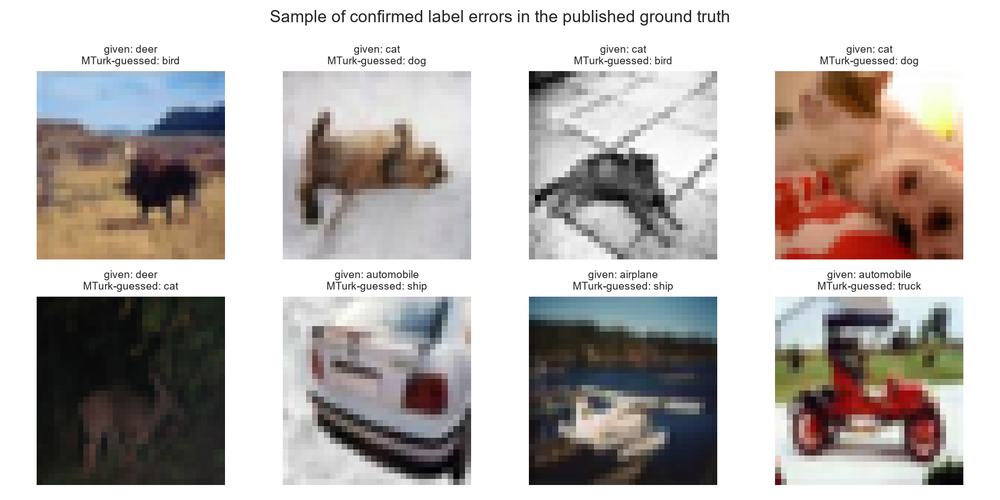
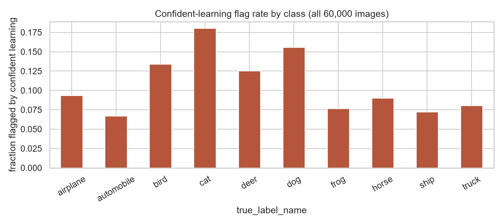
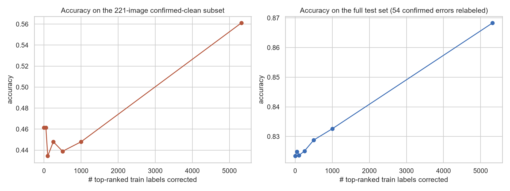

Label Quality Analyzer · Confident-Learning Case Study
The Confidence Trap
A pipeline that flags likely mislabeled CIFAR-10 images with confident learning — then checks its own flags against a real, independently human-verified answer key, instead of just trusting the algorithm.
Can an automated process actually catch bad labels?
Every model is downstream of its training labels, and that part of the pipeline is easy to take on faith. Confident learning promises to flag likely label errors using nothing but a model's own predicted probabilities — but a QA process that's never checked against real ground truth is really just an assertion.
This project builds that pipeline end to end on CIFAR-10, chosen specifically because it's one of the only datasets with an independent, peer-reviewed, human-verified answer key for label errors: cleanlab/label-errors, from Northcutt et al.'s "Pervasive Label Errors in Test Sets Destabilize ML Benchmarks." Verifiability was chosen over novelty on purpose.
Frozen embeddings, not a trained CNN
CPU-only by design — a full end-to-end CNN training loop caused an out-of-memory crash on this machine during an earlier project. Instead: a frozen, ImageNet-pretrained MobileNetV2 does a single forward pass per image, and a 5-fold cross-validated logistic regression on the resulting embeddings supplies the calibrated probabilities confident learning actually needs.
Native 32×32 input was tried first and quietly failed — MobileNetV2's BatchNorm statistics are tuned for 224px, and a diagnostic sweep across four resolutions showed exactly why:
| Resize | Accuracy | Extraction time (60k images, CPU) |
|---|---|---|
| 32×32 (native) | 48.9–50.2% | ~1 min |
| 96×96 | 75.1% | ~7 min |
| 128×128 (chosen) | 77.1–79.1% | ~12 min |
| 224×224 (native ImageNet) | 82.8% | ~39 min |
128px recovers most of 224px's accuracy gain at roughly a third of the compute cost — still a fully frozen forward pass, not fine-tuning.
Does it actually work?
The full pipeline reaches 82.86% cross-validated accuracy on the 60,000-image baseline classifier, then flags 6,439 images (10.7%) as likely mislabeled. Scored against the published, human-Mechanical-Turk-verified ground truth — the project's central, load-bearing result:

A more accurate classifier caught fewer errors
Before settling on the 128px resize, the full pipeline was run once at native 32px resolution — noisier, but it disagreed with given labels more often, and more of those disagreements turned out to be correct.
Both runs are real, honest results from the same pipeline; only the input resolution changed between them. The 128px classifier was kept anyway — it trades recall for a far more precise, lower-volume flag set a human reviewer could realistically work through.
Where the errors live
The confusable-classes hypothesis holds, unevenly: among the 54 confirmed errors, cat↔dog is the single largest confusion pair, automobile↔truck second. Among the pipeline's own 6,439 flags, the same two pairs dominate even more sharply — but so does a pair nobody hypothesized going in.

Airplane↔ship shows up strongly in both the confirmed errors and the pipeline's own flags — unhypothesized, and most likely explained by both classes commonly sharing open sky or water backgrounds at 32px resolution, not object shape.
Correcting the queue doesn't pay off in small slices
The working hypothesis was that correcting even a modest top-K slice of the review queue should yield a disproportionate accuracy gain. A real before/after simulation — retrain on the training embeddings with the queue's top-K items relabeled, evaluate on two untouched test slices — told a different story.

Limitations
Ground truth exists for only 275 of 60,000 images — the ones the original 2021 cleanlab run happened to flag and send to human review. The 1,005 unreviewed test-set flags (and every flagged training-set image) can only be spot-checked qualitatively, not scored. The correction simulation also assumes every "corrected" label is the model's own top guess, accepted without a real reviewer — a simplification the results above show matters directly. Single dataset, single domain, no inter-annotator or SLA monitoring over time.